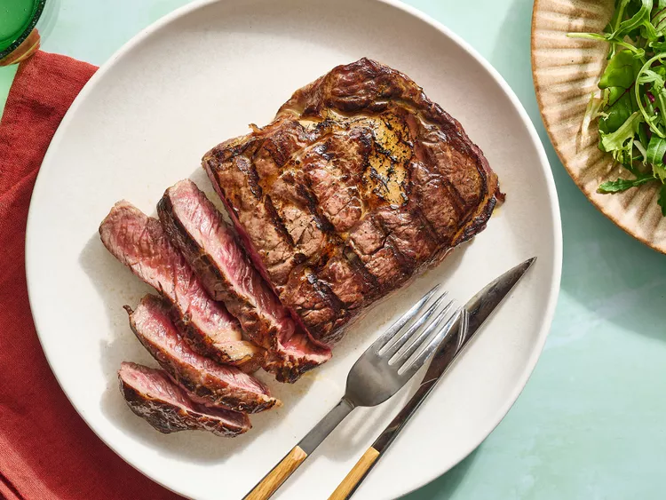

Ribeye

Description
A simple recipe for a perfect grilled Ribeye steak
Ingredients
- 1 (12 ounce) ribeye steak
- 1⁄2 teaspoon seasoned salt
-
1⁄4 teaspoon freshly cracked black
pepper
Steps
- Gather Ingredients
-
Season steak evenly, using 1⁄4 teaspoon
seasoned salt and 1⁄8 teaspoon black
pepper on each side. Set aside.
-
Light charcoal briquettes. Once they are red hot, place steak on the
grates. Grill for 4 to 5 minutes. Turn steak over and grill an
additional 2 to 3 minutes.
-
Tent steak with aluminum foil and let rest 4 to 5 minutes before
serving.